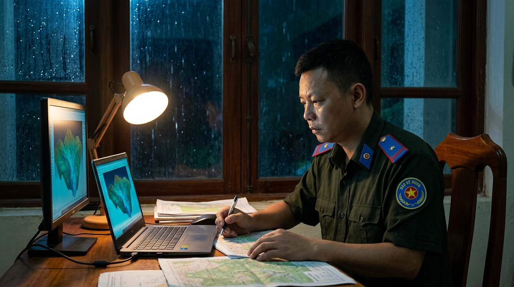
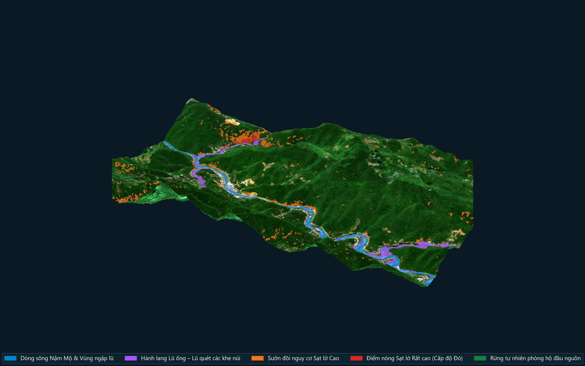
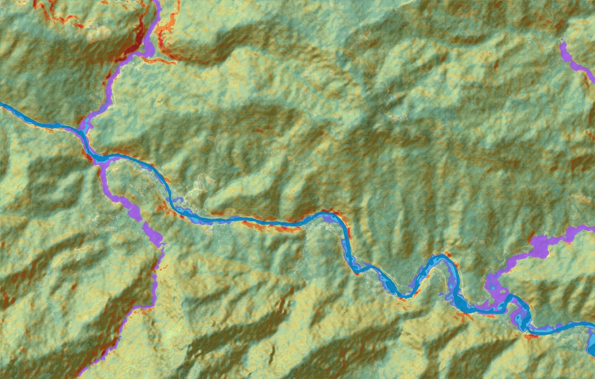
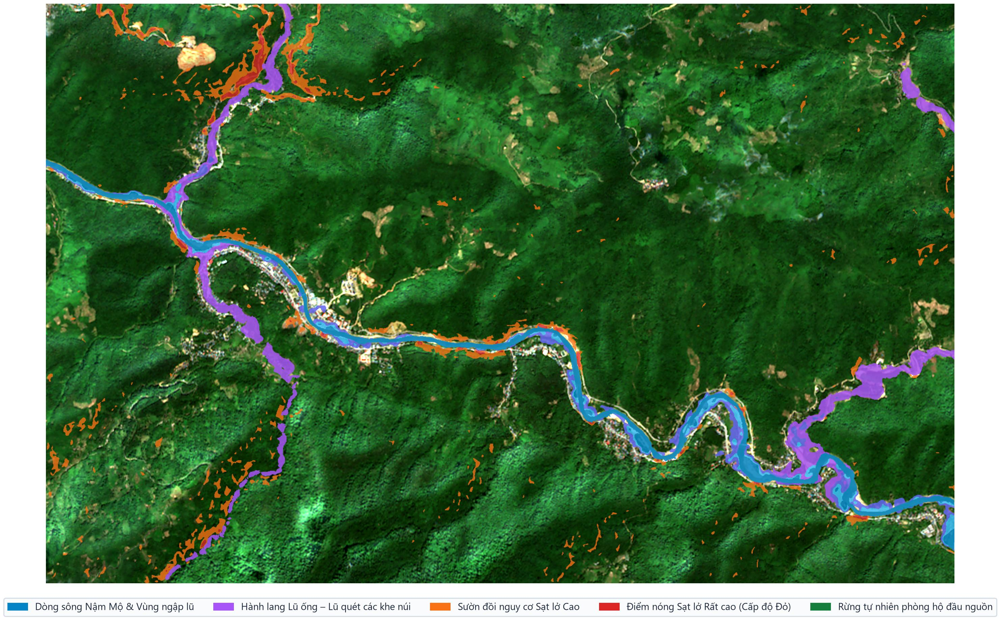
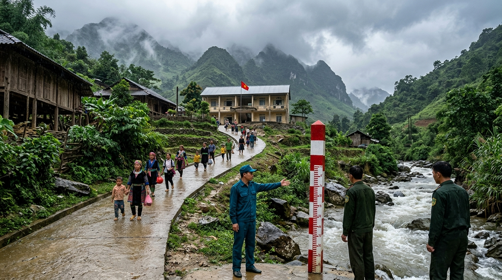
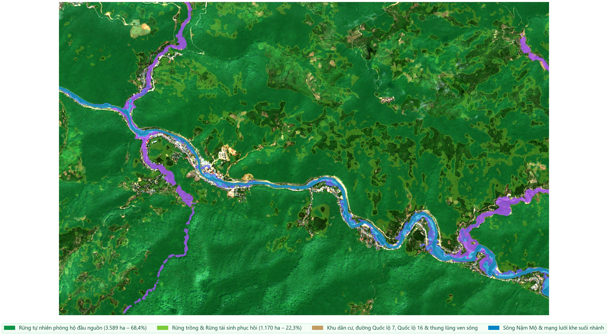

1. Nỗi trăn trở sau những mùa lũ dữ nơi thung lũng hẹp
Ai từng đi ngược Quốc lộ 7 lên miền Tây xứ Nghệ vào những tháng mùa mưa bão đều thấu hiểu sự khắc nghiệt của địa hình nơi đây. Dòng sông Nậm Mộ nhận nước từ bên kia biên giới đổ về, len lỏi qua những hẻm núi cao vút và những vách đá dựng đứng. Người dân vùng Mường Xén, Tà Cạ, Hữu Kiệm vẫn chưa thể nào quên rạng sáng kinh hoàng đầu tháng 10 năm 2022, khi sau những giờ mưa như trút nước ở thượng nguồn, cơn lũ ống, lũ quét từ khe núi Huồi Giảng bất ngờ đổ ập xuống trong đêm tối, cuốn trôi nhà cửa và vùi lấp tuyến đường độc đạo.
Với những người cán bộ lâm nghiệp quanh năm bám rừng, bám bản ở Kỳ Sơn, mỗi vết sạt lở đỏ quạch trên sườn núi sau mùa mưa lũ luôn để lại một câu hỏi day dứt: “Làm sao để bà con mình và cán bộ xã biết trước ngọn đồi nào sau lưng nhà đã no nước dễ sạt lở, con suối nào sắp dâng lũ quét để kịp đưa người già, trẻ nhỏ đi lánh nạn trước khi trời tối?”

2. Đưa cả vùng núi rừng và hơn 2.000 mái nhà lên “sa bàn sống” 3 chiều
Bắt tay vào giải bài toán ấy, thay vì vẽ những tấm bản đồ giấy phức tạp chỉ dành cho giới chuyên môn, tác giả đã xây dựng nên một Hệ thống Bản đồ số WebGIS và Mô hình 3 chiều (3D) tái hiện chân thực toàn bộ vùng thung lũng sông Nậm Mộ rộng hơn 5.245 héc-ta — kéo dài từ khu vực Cầu Sơn Thành (xã Mường Xén) đến Cầu Xốp Nhị (xã Hữu Kiệm).
Trên màn hình máy tính hay chiếc điện thoại thông minh, cả vùng núi non hiểm trở hiện lên rõ mồn một như nhìn từ cánh chim bay. Nhờ kết hợp ảnh chụp vệ tinh sắc nét với trí tuệ nhân tạo và độ dốc thực tế của từng sườn đồi, hệ thống tự động tô màu cảnh báo rất trực quan mà bất kỳ người dân nào nhìn vào cũng hiểu ngay:
Những vệt màu cam, màu đỏ là những vách núi dựng đứng dọc Quốc lộ 7, Quốc lộ 16 hoặc phía sau nhà dân có nguy cơ sạt lở đất đá rất cao khi mưa dầm thấm đất; những dải màu xanh dương là vùng nước sông Nậm Mộ dâng ngập theo từng cấp báo động; còn những luồng màu tím từ các khe núi hẹp đổ ra chính là đường đi của lũ ống, lũ quét.


3. Mở được ngay cả khi mất mạng Internet giữa tâm bão
Một chi tiết rất đời thường nhưng lại quyết định sự thành bại của công tác cứu hộ vùng cao: mỗi khi mưa lũ lớn ập về, cột điện dễ bị gãy đổ và sóng điện thoại, mạng Internet thường bị mất đầu tiên. Nếu một phần mềm cảnh báo bắt buộc phải có mạng Internet mới mở được thì lúc nguy cấp nhất lại không thể dùng.
Vì vậy, toàn bộ hệ thống WebGIS và sa bàn 3D này đã được tác giả đóng gói gọn nhẹ để chạy hoàn toàn độc lập (Offline 100%) ngay trên máy tính xách tay của xã, của bản mà không cần kết nối mạng.
Khi nghe tin mưa lớn ở thượng nguồn hay thủy điện thông báo xả lũ, cán bộ trực ban chỉ cần kéo nhẹ thanh trượt mực nước trên màn hình từ mức +2,5m lên +5m hoặc +8m. Tức thì, mặt nước trên mô hình 3D dâng lên tới đâu sẽ báo ngay những hộ dân nào ở Bản Sơn Thành, Bản Hòa Sơn, khu vực Bến xe Khối 1 – Khối 2 (xã Mường Xén) hay Bản Na Chảo, Bản Na Lượng, Bản Khe Tỷ, Bản Xốp Nhị (xã Hữu Kiệm) nằm trong vùng nguy hiểm cần phải sơ tán trước.


4. Giữ “lá chắn rừng xanh” kết hợp “lá chắn số” vì bình yên bản làng
Không chỉ chỉ ra nơi nguy hiểm, tấm bản đồ còn vẽ sẵn những “đường xanh sơ tán an toàn” ngắn nhất, dẫn lối cho bà con tại 18 điểm dân cư rút về các công trình kiên cố nằm trên đồi cao như Trường THPT Kỳ Sơn, Trung tâm Y tế Kỳ Sơn, Trụ sở UBND xã hay Căn cứ Ban Chỉ huy Quân sự xã Hữu Kiệm tại Bản Xốp Thạng.
Và hơn hết, khi nhìn vào lớp bản đồ thảm thực vật của hệ thống, bất kỳ ai cũng nhận ra một sự thật giản dị mà thấm thía: bao bọc phía trên những bản làng ven sông Nậm Mộ là hơn 3.589 héc-ta rừng tự nhiên đầu nguồn. Nơi nào cánh rừng già còn nguyên vẹn, tán cây và bộ rễ sâu như một “bể chứa nước khổng lồ” giữ chặt đất đá, làm chậm dòng lũ dữ. Ngược lại, những nơi đồi trọc hoặc vách núi bị xẻ đất làm đường mà thiếu cây rừng che phủ chính là những điểm đỏ dễ sạt lở nhất.

- ✅ Bảo vệ trực tiếp 2.015 hộ dân (hơn 8.700 người dân): Rà soát chi tiết từng cụm nhà ven sông, ven suối và dưới chân đồi dốc thuộc 18 bản, khối của hai xã Mường Xén và Hữu Kiệm.
- ✅ Dễ hiểu, dễ dùng cho cả cán bộ xã và người dân: Giao diện tiếng Việt trực quan, mở được trên cả máy tính và điện thoại, hoạt động tốt ngay cả khi mất điện, mất mạng Internet giữa mùa mưa bão.
- ✅ Chỉ rõ đường đi an toàn khi khẩn cấp: Mỗi bản làng có nguy cơ ngập lũ hoặc sạt lở đều được gắn với một lộ trình di chuyển cụ thể về trường học, bệnh viện hoặc trụ sở kiên cố trên đồi cao.
- ✅ Sẵn sàng nhân rộng cho các vùng cao khác: Từ mô hình thực tế tại Kỳ Sơn (Nghệ An), quy trình xây dựng bản đồ đã được đóng gói hoàn chỉnh để có thể áp dụng nhanh cho nhiều xã miền núi thường xuyên chịu ảnh hưởng của lũ ống, lũ quét và sạt lở đất.